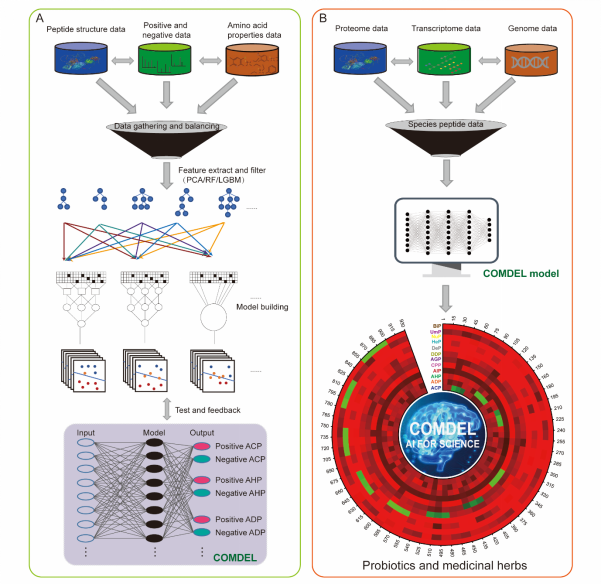
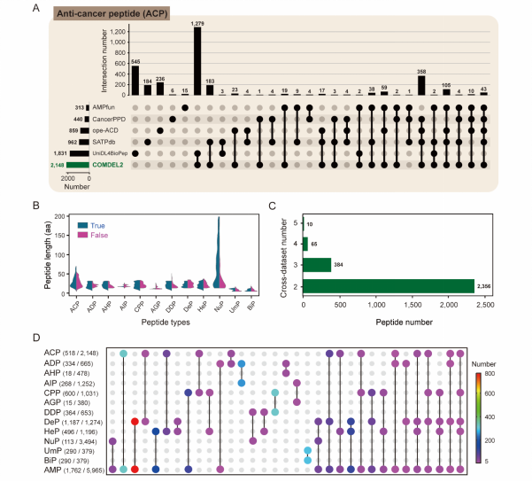
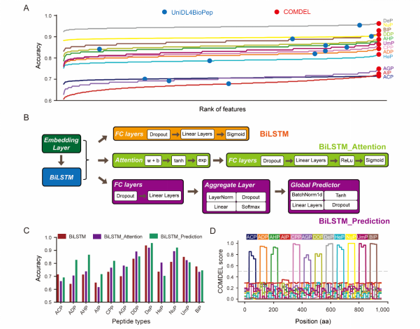
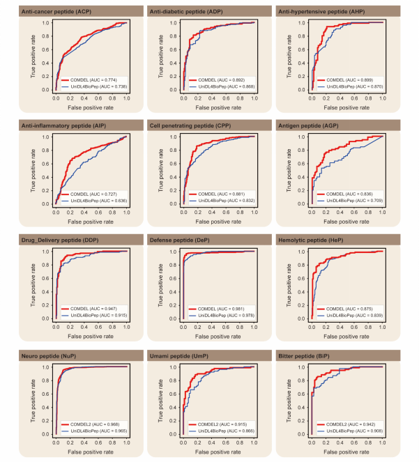
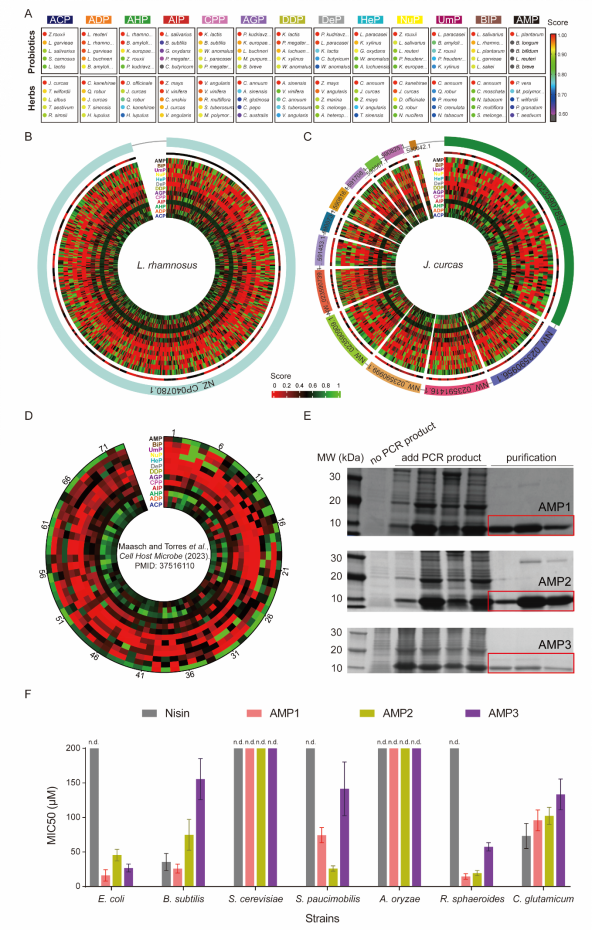
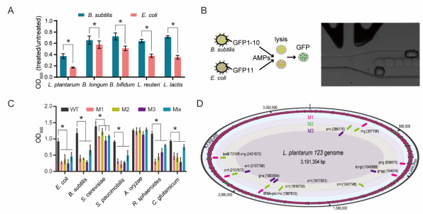
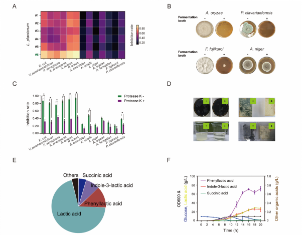

Protocols
Protocol: Enhancing Antimicrobial Ability of Lactobacillus plantarum Using Deep Learning and Directed Evolution
Title
Development and Validation of Enhanced Lactobacillus plantarum Strains Using Deep Learning Predictions and Directed Evolution for Antimicrobial Applications
Purpose
To develop and validate an advanced deep learning model for predicting bio-functional peptides and to generate enhanced L. plantarum strains with superior antimicrobial properties using directed evolution and high-throughput screening techniques.
Materials and Reagents
- Biological Materials
- Lactobacillus plantarum wild-type strain
- E. coli BL21(DE3) strain
- B. subtilis 168 strain
-
Plasmid pBAD18-GFP
-
Reagents
- Atmospheric and Room Temperature Plasma (ARTP) mutagenesis system
- Arabinose, L-arabinose
- S30 buffer: 10 mM triacetate (pH 8.2), 14 mM magnesium acetate, 60 mM potassium acetate, 2 mM dithiothreitol (DTT)
- HEPES buffer (pH 7.2), folinic acid, E. coli tRNA mixture
- T7 RNA polymerase
- Amino acid mix (20 standard amino acids)
- Nicotinamide adenine dinucleotide (NAD), coenzyme-A (CoA), putrescine, sodium oxalate, spermidine, phosphoenolpyruvate (PEP)
- BCA Protein Assay Kit
- SDS-PAGE reagents
- MRS medium (for L. plantarum culture)
- PBS buffer
- Antibiotics: Ampicillin
- Fluorescence-activated droplet sorting (FADS) reagents and microfluidic chips
-
Protease K
-
Equipment
- BiLSTM deep learning model setup (Python, PyTorch)
- Centrifuge
- Incubator
- Sonicator
- Illumina NovaSeq 6000 platform for next-generation sequencing
- SDS-PAGE gel electrophoresis setup
- Fluorescence microscope
- Electroporator
- High-speed digital camera for FADS analysis
- Spectrophotometer
Protocol Steps
1. Data Preparation for Deep Learning Model
1.1 Data Collection: - Collect peptide sequences from public databases (BioDADPep, SATPdb, CancerPPD). - Ensure the dataset includes various BioPeps categories: AMPs, AIPs, ACPs, etc.
1.2 Data Processing: - Remove redundant sequences (over 90% identity) using CD-HIT. - Exclude sequences containing non-standard amino acids (e.g., B, J, O, U, X, Z). - Generate negative control datasets from the UniProt database with similar length distribution.
1.3 Feature Extraction: - Apply feature extraction techniques such as Amino Acid Composition (AAC), Dipeptide Composition (DPC), and BLOSUM62 embeddings. - Use AAindex for physicochemical properties and CKSAAGP for k-spaced amino acid pairs.
1.4 Model Training: - Train the BiLSTM model on the processed dataset using a split of 80% training and 20% testing data. - Optimize model parameters using the Adam optimizer with a learning rate of 0.001. - Evaluate the model performance using Accuracy, Sensitivity, Specificity, and AUROC metrics.
2. Cell-Free AMP Synthesis
2.1 Preparation of Cell-Free Extract: - Grow E. coli BL21(DE3) cells to an OD600 of 3 in 2 × YT medium. - Harvest cells by centrifugation at 5,000 × g, wash with S30 buffer, and resuspend in fresh S30 buffer. - Lyse cells using sonication under ice bath conditions, add DTT, and centrifuge at 12,000 × g for 10 minutes.
2.2 Cell-Free Reaction Setup: - In a 50 μL reaction volume, mix: - 50 mM HEPES buffer (pH 7.2) - 1.2 mM ATP, 0.85 mM UTP, GTP, and CTP - 34 μg/mL folinic acid, 170 μg/mL E. coli tRNA - 5 μg/mL T7 RNA polymerase - 15 μg/mL PCR product (peptide template) - 2 mM of each of the 20 standard amino acids - 0.33 mM NAD, 0.27 mM CoA, 1 mM putrescine, 4 mM sodium oxalate, 1.5 mM spermidine - 130 mM potassium glutamate, 10 mM ammonium glutamate, 12 mM magnesium glutamate, 33 mM PEP - 30% (v/v) cell extract
2.3 AMP Production: - Incubate the reaction mixture at 37°C for 4-6 hours. - Analyze AMP production using SDS-PAGE and quantify with BCA Protein Assay.
3. Directed Evolution of L. plantarum
3.1 ARTP Mutagenesis: - Grow L. plantarum to OD600 0.6 in MRS medium. - Harvest cells, wash twice with PBS buffer, and resuspend in PBS. - Expose cell suspension to ARTP treatment: 120 W, 15 SLM, 2 mm, 1 min.
3.2 Screening with FADS: - Prepare fluorescence-based biosensor strains (GFP10-E. coli, GFP11-B. subtilis). - Mix mutant L. plantarum library with biosensor strains in microfluidic droplets. - Sort droplets based on fluorescence intensity using FADS.
3.3 Validation of Mutants: - Grow sorted L. plantarum mutants and test fermentation products for antimicrobial activity against indicator strains. - Use MIC assays to evaluate AMP activity.
4. Industrial Application Testing
4.1 Food Preservation Testing: - Add 5% fermentation supernatant of evolved L. plantarum strains to food samples (e.g., soy sauce, coconut juice, bread). - Store under standard conditions and monitor microbial growth over time.
4.2 Pharmaceutical Application Testing: - Test cell-free synthesized AMPs against multi-drug resistant bacteria. - Perform MIC tests and assess antimicrobial efficacy.
| Experiment ID | Objective | Outcome | Figure |
|---|---|---|---|
| 1 | Develop BiLSTM-based deep learning model | Achieved 94.8% accuracy | 3 |
| 2 | Curate peptide dataset | Compiled 17,572 unique sequences | 1, 4 |
| 3 | Feature extraction for peptides | Used AAC, DPC, and BLOSUM62 embeddings | 1 |
| 4 | AMP prediction validation | 88% accuracy in experimental validation | 5 |
| 5 | Create cell-free AMP synthesis platform | Produced 0.5-2.1 g/L AMP | 6 |
| 6 | Apply ARTP mutagenesis on L. plantarum | Generated diverse mutant strains | 7 |
| 7 | Screen mutants with FADS | Isolated 3 mutant strains with improved activity | 6 |
| 8 | Test mutants for antimicrobial activity | Broad-spectrum activity validated | 7 |
| 9 | Industrial application in food preservation | Increased shelf life of products | # |
| 10 | Pharmaceutical testing of AMPs | Effective against multi-drug resistant bacteria | # |
| 11 | Expand dataset for model improvement | Aimed to improve generalization | # |
| 12 | Develop L. plantarum bio-preservative | Enhanced probiotic strain for industry | 7 |
{kind=link}
{kind=link}

Figure 1. COMDEL application

Figure 2. BioPeps analysis

Figure 3. Model construction

Figure 4. Performance evaluation

Figure 5. Application of COMDEL on probiotics and medicinal herbs

Figure 6. COMDEL and FADS application

Figure 7. Antimicrobial activity test